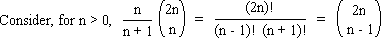
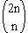
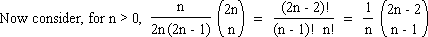

Solution to puzzle 57: Binomial coefficient divisibility
Show that, for n > 0, the binomial coefficient  is divisible by n + 1 and by 4n - 2.
is divisible by n + 1 and by 4n - 2.

This is an integer, by virtue of its being a binomial coefficient.
Since n and n + 1 are coprime,  must be divisible by n + 1.

By the previous result, for n > 1, this is an integer. It is an integer by inspection for n = 1.
Therefore, is divisible by 2(2n - 1) = 4n - 2.
Source: Inspired by Catalan Number